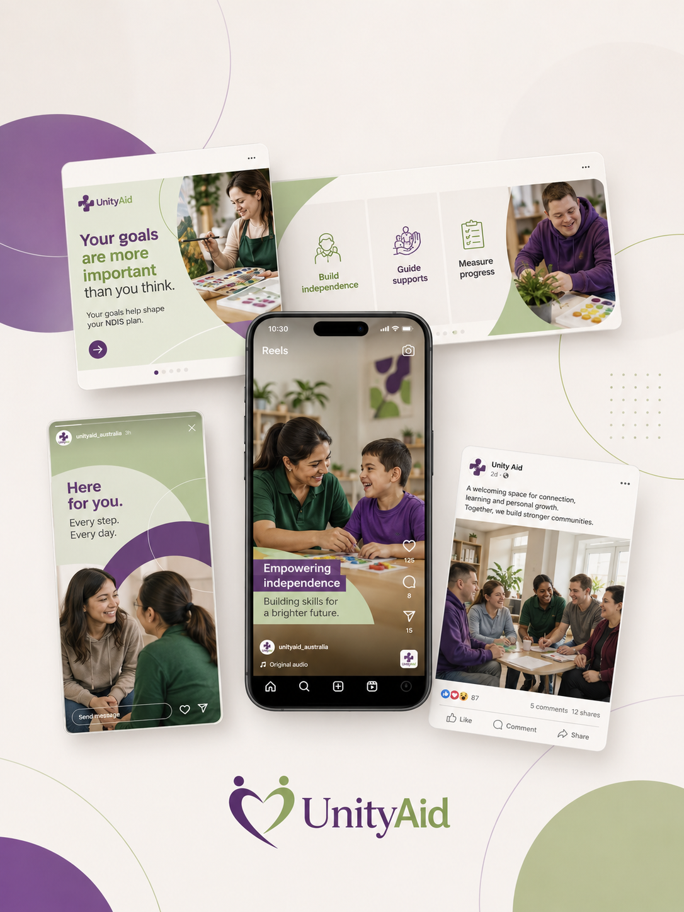

COMMUNITY & NDIS
Unity Aid
Ongoing social media content and website coordination for a Melbourne NDIS provider, built around clear, accessible storytelling for participants, families and support workers.

THE CHALLENGE
Communicating trust and warmth in a highly regulated sector
As an NDIS provider, Unity Aid needed a social media and content presence that could speak clearly to participants, families and referrers, while reflecting the sensitivity and care their services require. The brand also serves a culturally diverse community, adding a need for bilingual, accessible communication rather than a one-size-fits-all approach.
THE APPROACH
A content system built for clarity and consistency
I work directly with Unity Aid's General Manager on an ongoing content calendar, producing social posts in both English and Persian to reach the communities the service supports. This has included a pre-launch content calendar for a new Community Day Centre, a neurodivergent-representation character series designed to build familiarity and trust, and branded collateral such as NDIS price lists and flyers for participant-facing use.
On the website side, I coordinate directly with Unity Aid's website manager to scope new pages as the organisation grows — including a standalone landing page and waitlist form for a new Respite Centre — keeping content, branding and functionality aligned across the site and social channels.
- Bilingual (English/Persian) social media content calendar
- Neurodivergent-representation character series
- Branded NDIS price list and flyer design
- Coordination on new website landing pages and forms
THE RESULT
A steady, trusted content presence
Unity Aid now has a consistent content rhythm and a clear process for launching new services online — from a first social announcement through to a fully scoped website page — without needing to manage multiple freelancers or ad-hoc requests.
Need content or website support for your organisation?
I'd love to learn more about your business and explore how I can help.
Start a Conversation